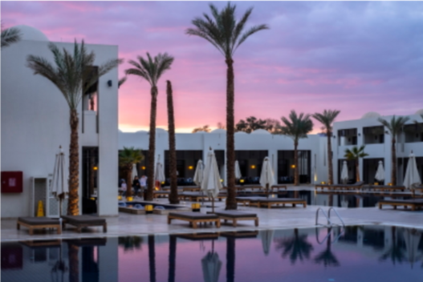

Een schitterend hotel in Spanje
Spanje is een geliefd vakantieland. U kunt er feesten en lekker eten, maar ook genieten van de natuur en van de rust. Spanje kent dan ook veel accomodaties waar u kunt verblijven. Op deze site laten we dit schitterende land en ons mooie hotel zien.
Waarom Spanje?
Waarom zou je voor Spanje kiezen als vakantieland? Spanje is een populaire vakantiebestemming en dat is niet voor niets zo: de vele zonuren, de heldere zee, de mooie parelwitte stranden, het lekkere eten, de warme cultuur, de vriendelijke Spanjaarden, de adembenemende natuur en de bruisende steden. Het is haast teveel om op te noemen. Spanje heeft heel veel te bieden en daardoor is er voor iedereen wel wat wils. Dat klinkt natuurlijk al goed, maar heb je toch nog een extra zetje nodig om van Spanje jouw volgende vakantiebestemming te maken? Lees dan zeker deze 11 redenen waarom Spanje the place to be is.
Beleef Spanje
Wilt u alvast een voorproefje? Bekijk dan onderstaand filmpje.
Accomodatie
Ons hotel is van vele gemakken voorzien en ligt aan de kust. Wat kunt u onder andere verwachten?
- All inclusive
- Sauna
- 50m van het strand
- Iedere avond live muziek
- 3 buiten zwembaden
- Fitness ruimte (gratis)
- Wifi in de gehele accomodatie (gratis)
- 24-uurs receptie
- Shuttle bus naar het centrum
- Geschikt voor mindervaliden
- Bagageruimte
- Fietsverhuur
- Nette en ruime kamers
Voor verdere informatie kunt u ons bellen. Ons nummer is +31612345678.
U kunt hier meer foto's van de omgeving en de accomodatie zien.
Boeken
Wilt u ons hotel boeken? gebruik dan de onderstaande button.